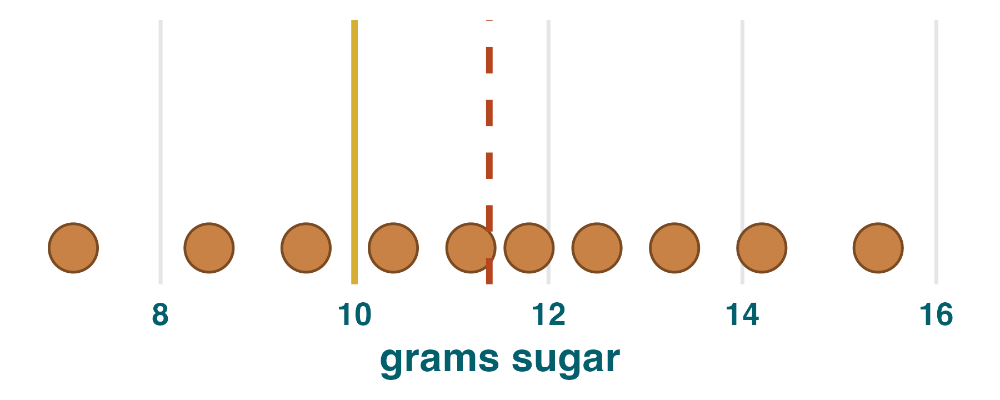
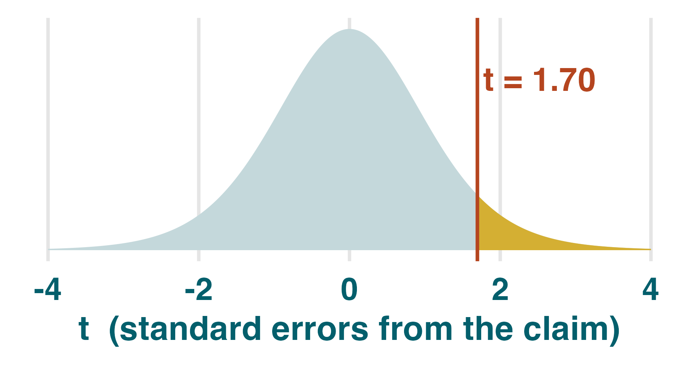
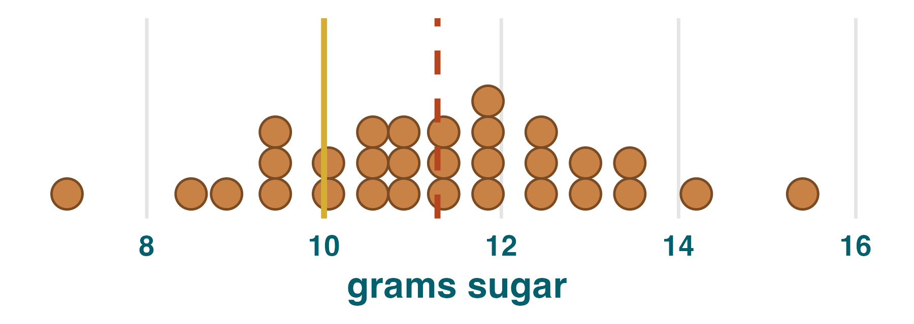
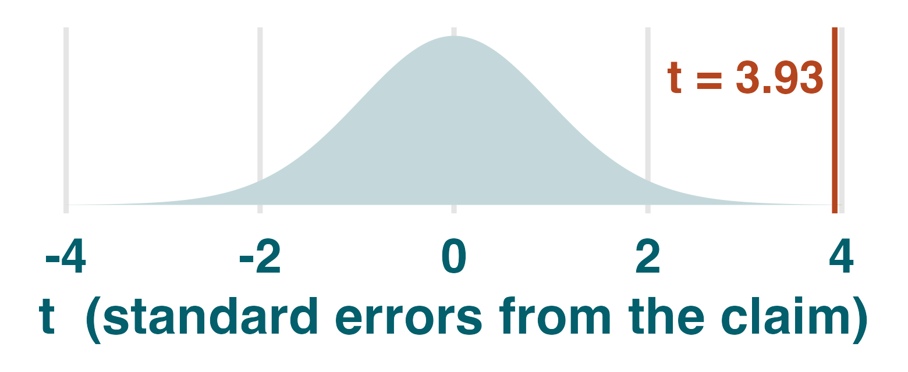

Bob's Donut Cafe | Introduction to the one-sample t-test
sugar <- c(7.1, 8.5, 9.5, 10.4, 11.2,
11.8, 12.5, 13.3, 14.2, 15.4)
mean(sugar)
#> 11.39
ggplot(tibble(sugar), aes(sugar)) +
geom_dotplot(binwidth = .5, colour = "#7a4a22") +
geom_vline(xintercept = 10, colour = "#d4af33") +
geom_vline(xintercept = mean(sugar), colour = "#b5451f",
linetype = "dashed")

1. Recipe really is 10g, 11.39g is just natural variation.
2. Recipe really is above 10g.
Which one? Let's settle it with a formal hypothesis test.
$H_1:\ \mu > 10$
true mean sugar exceeds the claim.
$H_1:\ \mu \ne 10$
true mean sugar differs from the claim in either direction.
A drug company claims its pill lowers blood pressure. What is H0?B
- A. The pill lowers blood pressure
- B. The pill has no effect
- C. The pill raises blood pressure
A factory's bolts should be 5cm. You suspect the machine has drifted out of calibration and want to test this. Which H1?C
- A. $\mu > 5$
- B. $\mu < 5$
- C. $\mu \ne 5$
For the same average gap, the evidence for a significant difference is stronger when the data are less ____ (variable / consistent) and the sample size is ____ (larger / smaller).variable · larger
s <- sd(sugar)
se <- s / sqrt(length(sugar))
t <- (mean(sugar) - 10) / se
#> t = 1.70

pt(t, df = 9,
lower.tail = FALSE)
#> 0.062
t.test(sugar, mu = 10, alternative = "greater") One Sample t-test data: sugar t = 1.6972, df = 9, p-value = 0.06195 alternative hypothesis: true mean is greater than 10 #> ... (CI + estimates clipped) ...
Practice reading one-sample t-tests, then extend Bob's audit
datasets::sleep data record extra hours of sleep after two drugs. Here we test whether drug 2 adds more than 0 hours on average.data(sleep, package = "datasets") drug2 <- subset(sleep, group == 2)$extra drug2 # [1] 1.9 0.8 1.1 0.1 -0.1 4.4 5.5 1.6 4.6 3.4 t.test(drug2, mu = 0, alternative = "greater") One Sample t-test data: drug2 t = 3.6799, df = 9, p-value = 0.002538 alternative hypothesis: true mean is greater than 0 95 percent confidence interval: 1.169334 Inf sample estimates: mean of x 2.33
1. What is the null hypothesis being tested?A
- A. $H_0:\ \mu = 0$
- B. $H_0:\ \mu > 0$
- C. $H_0:\ \mu = 2.33$
2. What is the sample mean extra sleep?B
- A. 0
- B. 2.33
- C. 3.6799
3. How many observations were tested?C
- A. 9
- B. 2
- C. 10
4. Match each term to its value, then to its plain-English meaning. Some values are rounded.
tdfp-value5. At $\alpha = 0.05$, what is the decision?B
- A. Fail to reject H0
- B. Reject H0
- C. H0 is proven true

sugar30 <- c(7.1, 8.5, 9.5, 10.4, 11.2, 11.8, 12.5, 13.3, 14.2, 15.4, 10.9, 9.6, 11.7, 12.3, 10.2, 11.0, 13.1, 9.9, 12.6, 10.7, 11.5, 10.4, 12.0, 9.3, 11.9, 13.6, 10.8, 11.3, 12.8, 8.9)
t.test(sugar30, mu = 10,
alternative = "greater")
One Sample t-test
data: sugar30
t = 3.9266, df = 29, p-value = 0.000244
alternative hypothesis: true mean is greater than 10
95 percent confidence interval:
10.72612 Inf
sample estimates:
mean of x
11.28
s <- sd(sugar30)
#> 1.79
se <- s / sqrt(30)
#> 0.33
t <- (mean(sugar30) - 10) / se
#> 3.93

pt(t, df = 29,
lower.tail = FALSE)
#> 0.000244
6. What stayed the same from the first donut test?A
- A. $H_0:\ \mu = 10$ and $H_1:\ \mu > 10$
- B. The sample size
- C. The p-value
7. Why is the evidence now stronger?C
- A. The claim changed
- B. The sample mean became significantly larger
- C. More data made the SE smaller
8. At $\alpha = 0.05$, what is the decision now?B
- A. Fail to reject $H_0$
- B. Reject $H_0$
- C. Prove $H_0$ false
9. In context, the follow-up audit gives strong evidence that Bob's true mean added sugar is ____ 10g. (above / below / equal to)above
10. Which interpretation is most careful?C
- A. Every donut has more than 10g of sugar
- B. Bob is probably adding 11.28g of sugar to all his donuts
- C. The data are unlikely if Bob is truly adding 10g sugar on average